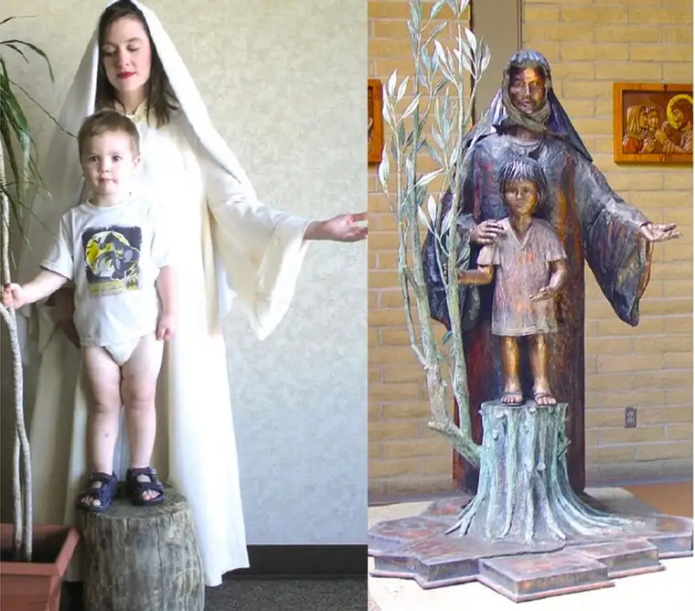

Human-anatomy exactness notwithstanding, I’m certain a mother’s tear ducts form a straight line to her heart.
And so it is that along with all the thank-you notes I’ll write this month, I’m tempted to send one to the inventor of waterproof mascara. That kind of genius deserves heartfelt praise.
I should have been prepared. There we were, in the midst of one of the most extreme months for mothers — a time when intense moments are guaranteed but without knowledge of when they’ll hit — and yet the tissues were in someone else’s purse.
A friend recently remarked that most of life is either mundane or difficult. When the highlights arrive — those sweet seconds pumped full of blessing — they are God-offerings that bring hope and carry us over the others.
In the past couple weeks, these “waterproof-mascara moments” have happened so often, I’m still left standing in a post-May haze of wonder.
It began with our “baby’s” fifth-grade graduation. As he grasped his certificate, grinning proudly in his red-tie attire, I counted back 15 years to all the fall family dances, winter Advent programs and spring musicals we’ve absorbed since our firstborn started kindergarten.

At that last school Mass, I glimpsed the copper sculpture near the baptismal font, recalling how, as a diapered toddler in a Batman T-shirt, he posed for that artistic rendering, a young, wiggly Jesus, while I stood near, modeling, imperfectly, a perfect Mary.
Now, he moves into middle school, but our likenesses will remain at Nativity Church forever, a beautiful shadow of all our years spent growing in that space.
From there, my mind darts to our middle girl, who turned sweet 16 the last day of school, passed her driving test that same afternoon, and not long after, drove off to the summer job she’d landed without help. Her independence and grace-under-pressure hold me in awe.
And then there’s our middle boy. As I watch him hop on his bike, tennis court bound with a new-and-improved backhand in mind, I wonder if he knows how much strength I’ve drawn from his steady demeanor through the years. It’s better he doesn’t, perhaps, yet my heart swells with gratitude.
It does, too, when I think of our oldest, who terrified us with unknowns, only to find a solid job working in an area he loves; a role which has him rising earlier than he’d prefer, but doing it anyway, and making wiser choices than we could have imagined just a year ago.
Our second-born, now-graduate rounds out the five. Though an honor student, she’s still ignorant about some things, like her inner strength, which sparkled bright as she greeted guests at her reception, or our thrill at seeing her singing “Summer Nights” as Sandy from “Grease” for her high-school stage finale; our real-life Olivia in her gifted glory.
The line of joy travels next to our extended family, first to my sister, who modeled sacrificial love as I stood at the brink of grad-party disaster, swooping in with her apron to save the day, sweat at her brow, even as her own busy life swirled, and then to my mother and in-laws, who hovered near with constant encouragement.
From there, I point to the pack of friends that appeared from every direction at the first call of distress, buoying us up so we could enjoy these milestones as they were meant to be experienced.
Each high point and the people connected caused the tears to flow salty and strong, but I’d be a fool to overlook where they lead.
Bishop John Folda said it best during Shanley High’s baccalaureate Mass, an event that confirmed my eye makeup’s tenacious quality, by bringing all these years and moments into right perspective.
“We need to thank God, not only for all the blessings that have happened, but for everything that is to come — all the love we will give, and all the love we will receive,” he said.
True greatness, he told the soon-to-be-graduates, comes from “being a servant to others, being great for others … The kind of service one gives out of passion, and out of love.”
Rather than seeking a great job, he suggested they pursue a life of mercy. “And what is mercy but reaching out and loving a person in their need,” he said, “and giving something you have to someone who has less.”
These acts might not always be noticed, he reminded. “But every single one of them changes us, and changes the world.”
In his homily, the highs, lows and everything in between collided.
And then, as the seniors sang “Jesu Dulcis Memoria” one last time with each other and possibly for forever, I touched my wet face and discovered truth: that this is life, and while it is far from always easy, it is very good.
[For the sake of having a repository for my newspaper columns and articles, I reprint them here, with permission, a week after their run date. The preceding ran in The Forum newspaper on June 4, 2016.]